Axiom — Guided walkthrough
1.0.27 · Windows · Basics 1–8 · Advanced Tools 9–16
Captions describe the current commands. Reference screenshots were captured on 1.0.24 and show earlier chrome; see the maintained offline User Guide (F1) for the compact workbench.
1. Open a workspace and edit Markdown
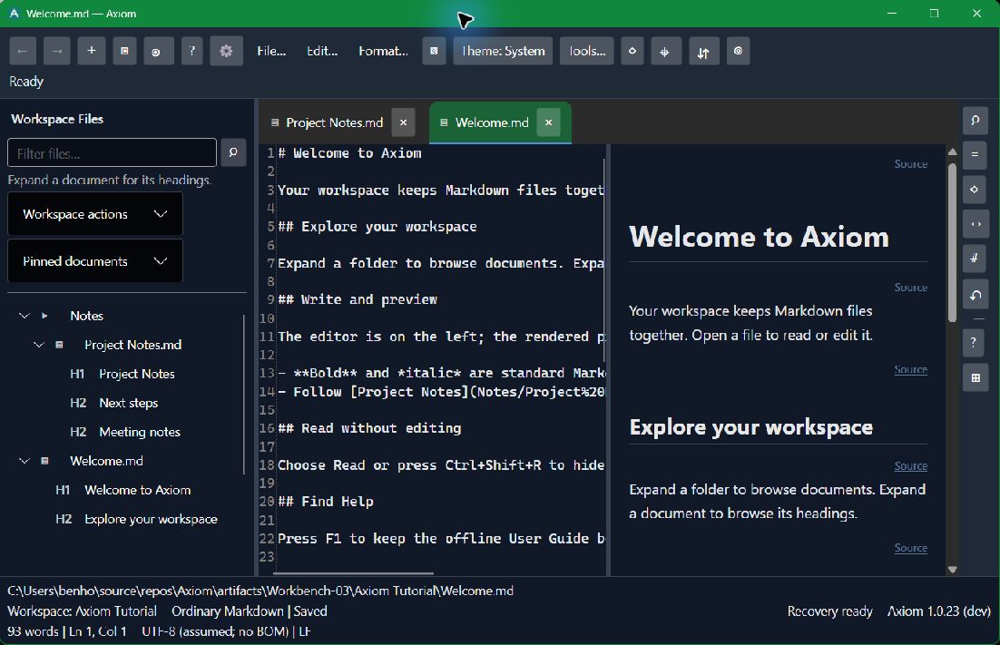
Open the hamburger main menu → File → Workspaces and navigation → Open Workspace, or use the Workspace Files header actions. Click a Markdown file once to open it. Edit source on the left and check the preview on the right. Ctrl+S saves; an asterisk on a tab means that document has unsaved changes.
Ctrl+S · Save
2. Filter files or search their contents
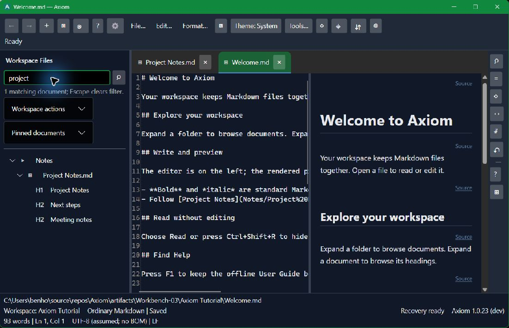
Click the Workspace Files header magnifier or press Ctrl+Shift+L to reveal the filename filter. Matching documents remain beneath their folders. Escape hides the filter and retains its query; open it and choose Clear to remove the query. Ctrl+Shift+F opens Workspace Search for text inside documents.
Ctrl+Shift+F · Workspace Search
3. Navigate a document's headings
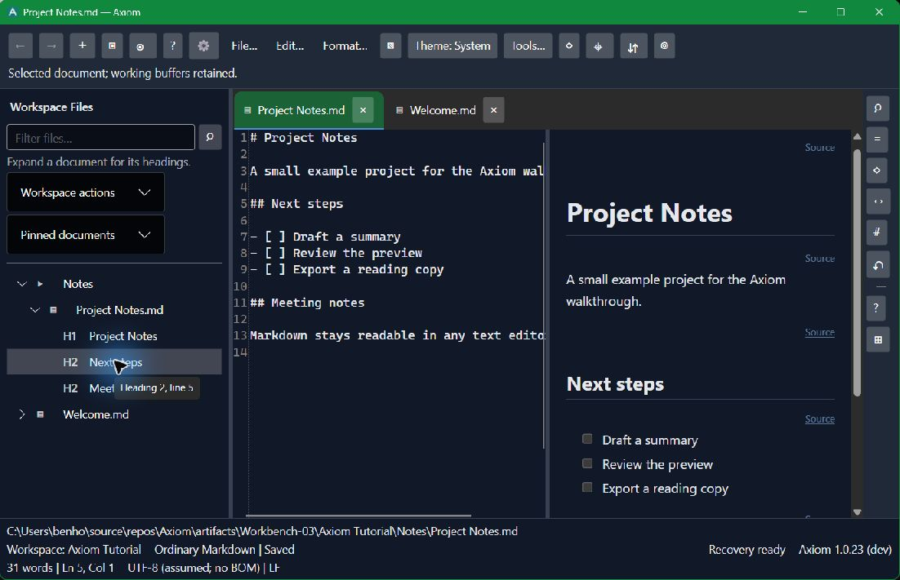
Expand a document to load its hierarchical outline. H2 sections nest beneath H1 titles; H3 subsections nest beneath their H2 section. Use arrows to expand or collapse a branch; collapsed sections stay collapsed while you edit. Click a heading label to navigate the current working text and preview. Skipped levels use the nearest preceding parent, and headings without a parent remain at the file's root.
Enter · Open the selected file or heading
4. Read without the editor
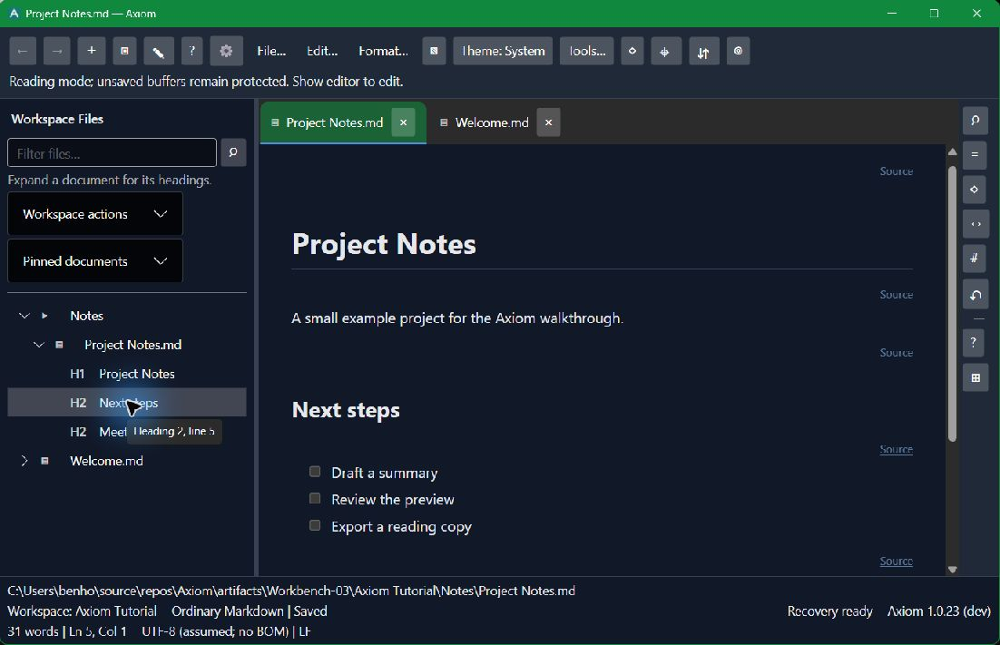
Use the reading-mode icon or Ctrl+Shift+R to hide the editor and give the preview more room. Your open documents, unsaved text and Undo history remain protected. Use the same shortcut to return to editing.
Ctrl+Shift+R · Toggle reading mode
5. Open and collapse a tool panel
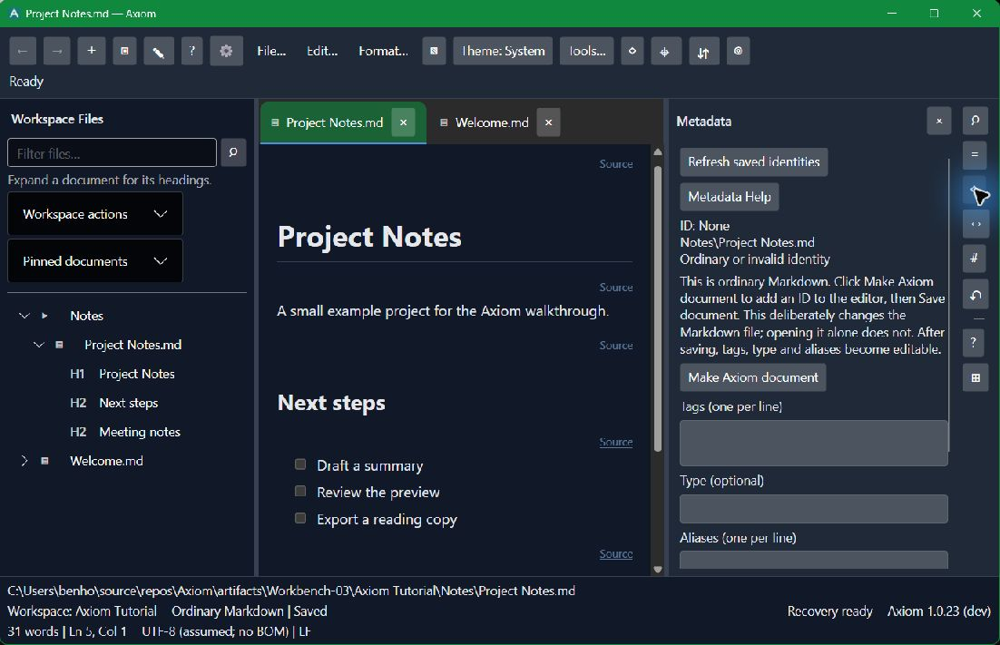
The right rail opens Metadata, Relationships, Classification, Search, Outline or Backlinks beside your document. Click the same icon again or the panel's × to collapse it. Drag the divider to resize. Metadata becomes editable after you explicitly make and save an Axiom document.
Ctrl+Shift+P · Find panel commands
6. Export a reading or editing copy
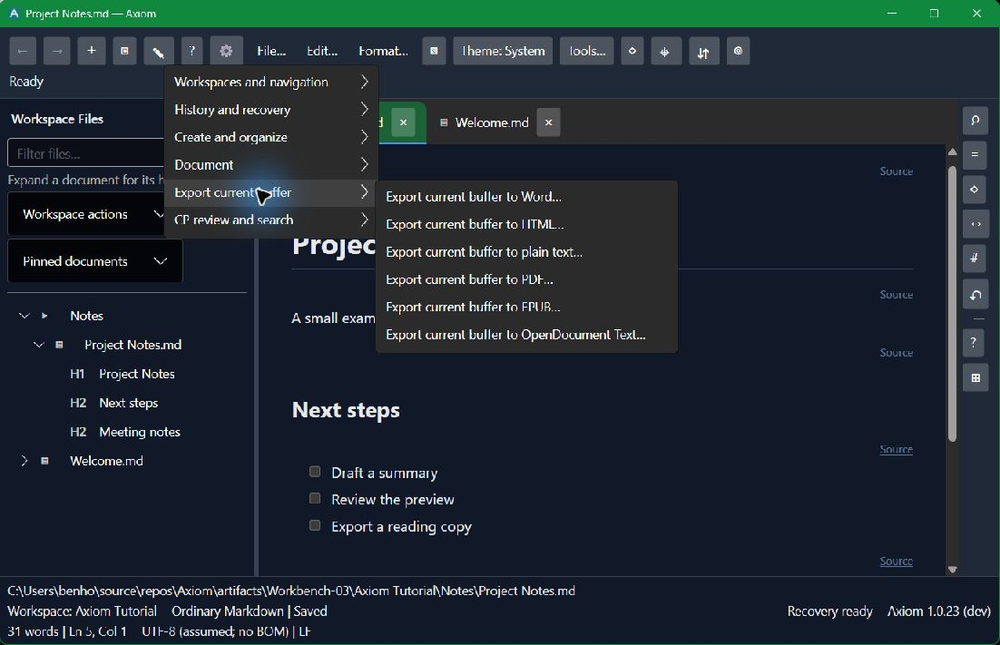
Choose File → Export current buffer, then Word, HTML, plain text, PDF, EPUB or OpenDocument Text. Choose the output location and review any overwrite prompt. Export uses your current buffer, including unsaved edits; it does not silently save or replace the Markdown source.
Ctrl+Shift+P · Search export commands
7. Keep Help beside your work
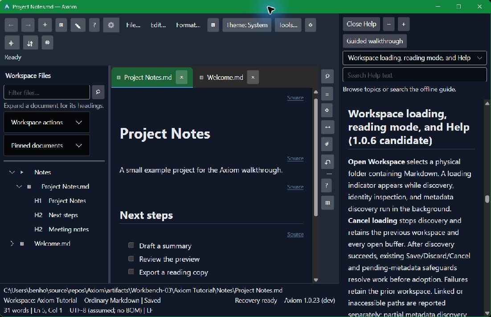
Press F1 to open the maintained offline User Guide. Browse topics or search Help text while your document stays open. The workbench topic explains the current layout. Guided walkthrough opens this slideshow; Close Help returns the space to your document.
F1 · Contextual Help
8. Find commands and reset the layout
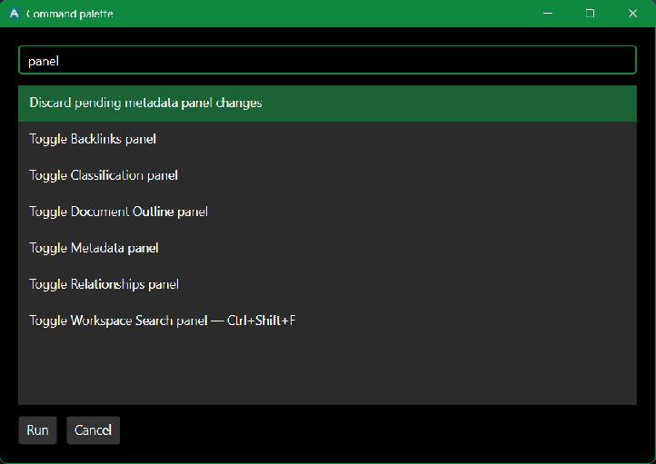
Press Ctrl+Shift+P and type an action, such as panel, save or export. The palette shows available actions and why others are unavailable. Search Reset workbench layout to restore panel widths and collapse tool windows without changing working documents. Escape cancels the palette.
Ctrl+Shift+P · Command Palette
9. Advanced Tools overview
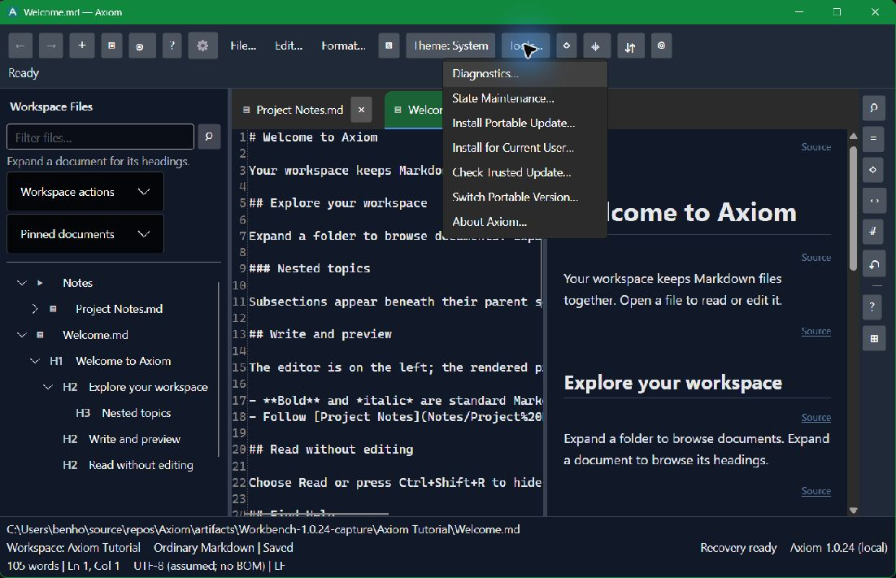
Open Tools to find diagnostics, state backups, installation, trusted updates, version switching and About. These are optional maintenance workflows. The following steps explain each action; use the step selector to jump directly to a topic. Keep your Markdown workspace separate from the application package and its state backups.
Tools → Choose an advanced topic
10. Inspect Diagnostics
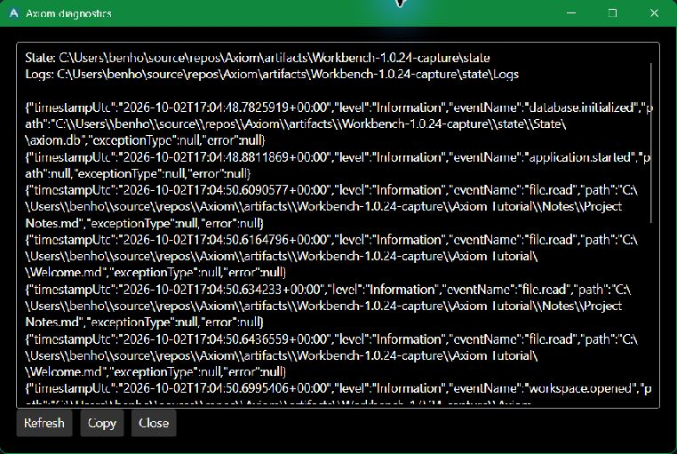
Choose Tools → Diagnostics. Read the bounded log tail and state/log locations; Refresh reloads it. Copy puts the displayed information on your clipboard. Review paths and exception details before sharing. Close returns to your document; this viewer does not repair files or reset your state.
Tools → Diagnostics
11. Inspect state and export a verified backup
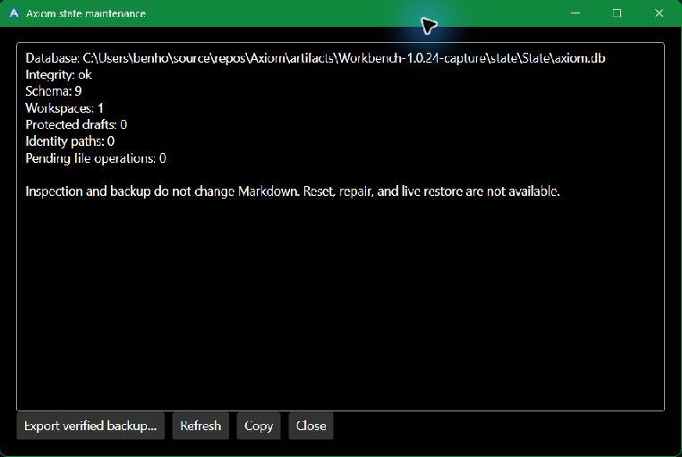
Choose Tools → State Maintenance. Check Integrity, schema, protected drafts and pending operations. To back up state, choose Export verified backup, select a new .db file and wait for the verified-backup result. Existing destinations are refused. This is a state backup, not a copy of your Markdown workspace: back up document files separately. Cancel the picker to leave files unchanged. Live reset/restore is unavailable; close all Axiom processes before following the documented recovery procedure.
Tools → State Maintenance → Export verified backup
12. Install a newer portable package
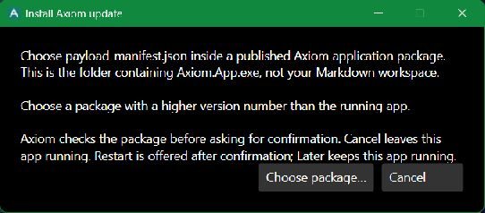
Extract the complete published package first. Choose Tools → Install Portable Update → Choose package, then select payload-manifest.json beside Axiom.App.exe, not inside your Markdown workspace. Review the verified build and state-schema compatibility before confirming installation into a new Versions folder; a verified state backup is created. Version ready offers Restart or Later. Restart protects unsaved documents with Save/Discard/Cancel; Later keeps this app running. Cancel any review to stop. Keep the full retained package for version switching.
Tools → Install Portable Update
13. Install for the current Windows user
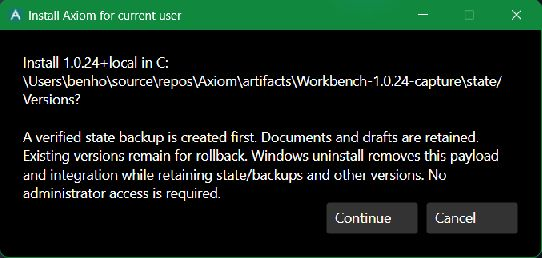
Run from a verified published package, then choose Tools → Install for Current User. Review the build and installation location before Continue. A verified state backup comes first; Start menu shortcut and Markdown Open with registration are separate explicit choices. Your default editor and documents remain unchanged. Installation does not restart the app. Windows Installed apps can uninstall this payload/integration after closing it, while retaining state, backups and other versions. Cancel the initial review to leave the installation unchanged.
Tools → Install for Current User
14. Check an independently trusted update offer
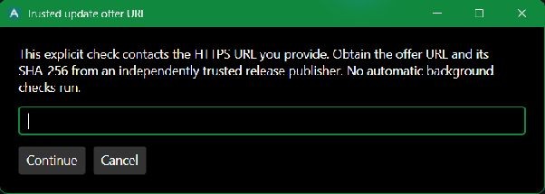
Choose Tools → Check Trusted Update only when you have an HTTPS offer URL and its JSON SHA-256 from an independently trusted publisher channel. Enter the URL, continue to the hash entry, and review version, channel, schema and release notes before choosing Download. The check is explicit; no feed or background checks are configured. A verified download is not installed automatically: use Install Portable Update and its payload-manifest.json when ready. Cancel without a URL makes no request. A hash from the same untrusted download source does not establish publisher trust.
Tools → Check Trusted Update
15. Switch to a retained compatible version
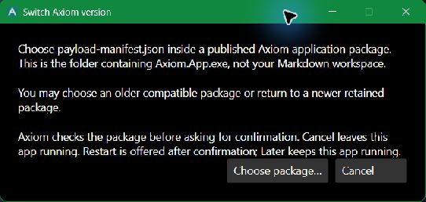
Choose Tools → Switch Portable Version → Choose package and select a retained application package’s payload-manifest.json. Review its identity and current-state compatibility; an older app must support the current schema. Confirm only the version you intend to run, then choose Restart or Later. Restart uses the same state root and unsaved-document protection; Later leaves the current app running. Cancel stops the switch. Do not replace running binaries manually or downgrade the database to force compatibility.
Tools → Switch Portable Version
16. Identify the running app with About
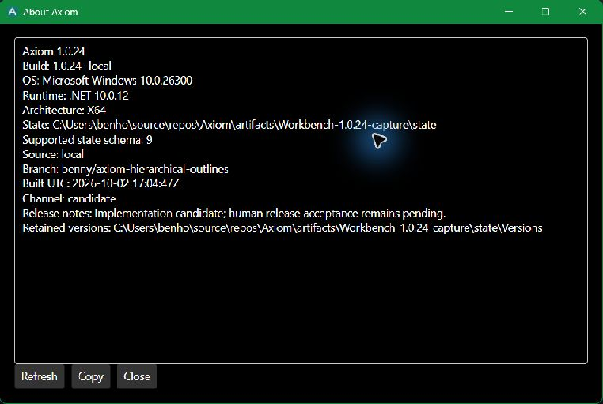
Choose Tools → About Axiom. Check product/build version, source commit, branch, platform, state path, supported schema, channel and retained-version location before reporting a problem or reviewing a candidate. This screenshot is an isolated 1.0.24+local example; the final candidate has its own commit identity. Refresh reloads the information; Copy copies it for your review and Close returns to work. Package hashes describe integrity and do not prove publisher authentication or human acceptance.
Tools → About Axiom